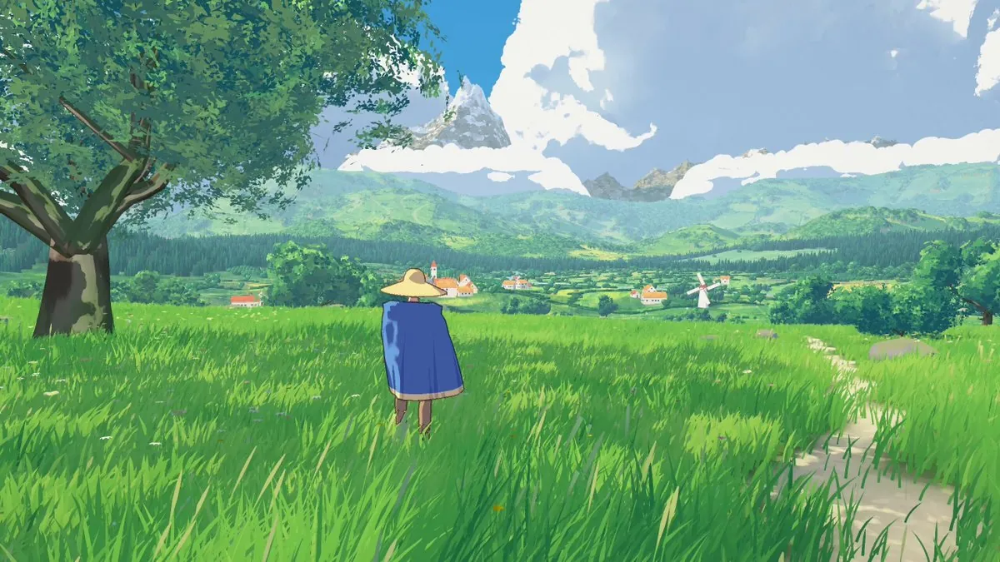

《Painted Valley》（画出来的山谷）是 Blendi 发布在 patch.gg/blendi/painted-valley 上的一篇可玩演示：一片夏天的山谷，画成手绘动画背景的样子，有堆起来的白云、画过的远山、瓦屋顶的村子，还有脚下不会碎成噪点的草甸笔触。一个戴草帽、披蓝斗篷的行人走在里面，平涂加墨线。土地和天空都是用代码在 three.js 里做出来的。作者在 2026-11-12 的帖子里说，这是用 Claude Fable 5.2 做成的、「吉卜力味道」的场景，可以玩，而且开源。本页以这件作品为中心。代码许可证在仓库里核到是 MIT（Copyright (c) 2026 Patch），美术是 CC0 1.0；所以下面有导读、README 与许可说明的全文中译，以及许可证原文。本页没有打开演示去走，也没有观看原帖里约 23 秒的视频，封面只用了视频静帧。

这是一件什么作品
公开页面把它标成一个 Effect（特效区块），引擎是 three.js。README 写得更清楚：这不是一张滤镜，不能罩在已经做好的游戏上；这种样子来自山谷里每一部分是怎么被画出来的。你可以从这片山谷出发去改它，再把你自己的游戏放进去。
就文档的说法，近处的草是顺着坡走的细笔和圆点，远处的地不再画细纹，免得一动就闪。远山是一张高度图画成的色带，岩石切出体面，山脚下有一排排树冠，三层丘陵退进雾里，远景不按帧去算。云是一堆球，预烘焙进立方体贴图，有白的顶、冷的暗面和暖的底，并且故意站住不动，只在换小时时重画一次光。平原上的田、篱、路和河画在同一张纹理里，树、果园、杨树和磨坊是立在上面的小画片。房屋的瓦垄、檐下的渍、窗扇和烟囱，都在着色器里按墙自己的坐标画出来。整帧最后会经过一小层 Kuwahara，把东西收成笔触，天空等需要保持干净的部分可以留下来。行人不是用「画」来画的，而是赛璐珞：三种平涂，交界干净，斗篷是布，草上的影子有清楚的边。这些都写在 README 里。本页读过仓库文档和源码目录，但没有在浏览器里走一遍，不能替文档保证走起来就是这个样子。⚠️
操作也以 README 为准：点击后用鼠标环顾，WASD 移动，Shift 跑，Alt 走，空格跳，滚轮拉近拉远，手柄也可以。V 切到行人自己的眼睛再切回来。T 在正午、午后、金色时分和日落之间切换，1 到 4 直接跳到其中一档，逗号和句号微调小时，0 让日子自己往下走。P 打开或关掉那层「画完」的处理。没有任务，只要走：下山进村，沿着河，再上到那面小湖。文档还写：房子进不去，村里暂时没有别人；只有正午到日落，没有夜晚，云也不移动；山谷大约两公里，走到边上会被折回来；第一人称里看不见身体和手。需要 WebGL2。性能模式可用 ?quality=low 或 medium。
仓库 package.json 把 three.js 钉在 0.186.1，并用 Vite 构建。行人的移动、相机和斗篷布料来自作者更早的区块 blendi/oil-paint；近处的草、花和地面框架来自 blendi/touch-grass。公开页显示版本 1.1.1，最近一次提交是 e523a37（2026-11-12 10:40，新加坡时间，UTC+8），说明修复了加载时全屏导致画面铺不满的问题。该提交的说明里有 Co-Authored-By: Claude Opus 5.5。这只说明这一处修复的提交信息如此，不能用来证实或否定作者「用 Fable 5.2 做了这片场景」的说法。⚠️
作者怎么说
以下为作者发布这件作品时的英文短帖全文中译。帖中附了一段约 23 秒的视频，并引用了 Patch 平台的发布说明。
用 Fable 5.2 做了这片很可爱的、吉卜力味道的场景 🌳
可以玩，而且是开源的：https://patch.gg/blendi/painted-valley
作者：Blendi @BlendiByl；发布：2026-11-12 09:43（新加坡时间，UTC+8）。原帖附视频，点击观看。资料简介写他是 Patch 联合创始人，此前在 fal 做工程，并参与创办 remade.ai，也提到剑桥大学。这些是简介里的自称，未独立核实。⚠️
英文原文
used fable 5.2 to make this delightful ghibli inspired scene 🌳
playable, and open source: https://patch.gg/blendi/painted-valley
不要和前一天那条更热的帖弄混
2026-11-11，同一作者另有一条传播更广的帖，正文是：用 Fable 5.2 在不到一小时里做了这个「手绘」游戏；每一帧大约 150 万笔触，在浏览器标签页里跑到 200 fps，也是开源的。紧接着的试用链接指向的是 blendi/oil-paint（《Oil paint》），不是《Painted Valley》。那条里的耗时、笔触数和帧率，都是对另一件作品的自报，不能写到本页这件山谷上。⚠️《Painted Valley》的仓库是次日建立的。两者有继承关系：README 写明，行人的移动、相机和斗篷是从 Oil paint 那一块拷过来的；许可说明也把山谷的样子，和手绘动画背景放在一起比较，并写明没有描摹或复制任何一部影片里的地点、建筑或人物。
许可与可复现性
2026-11-12 经公开页和公开的 git 克隆（https://git.patch.gg/blendi/painted-valley.git，HEAD 为 e523a37）现场核对：页面标签写「mit, cc0」；根目录 LICENSE 是 MIT License，版权行为「Copyright (c) 2026 Patch」；同文件写明，仓库里的图片与脚步声、以及 shots/ 下的静帧为 CC0 1.0；完整对照表在 LICENCE-NOTES.md，注明核对于 2026-11-11。three.js 0.186.1 为 MIT；物理引擎 Rapier 0.21.0 为 Apache-2.0。行人是 Patch 的 starter man（MakeHuman 系统资产，CC0），动画片段来自 Quaternius 的 Universal Animation Library 以及 Patch 自己的片段（均为 CC0）；小路地面是两张 ambientCG 贴图（CC0），脚步声是 Kenney 的（CC0）。
有两处边界需要单独说。第一，发行版演示里还有风、叶、鸟虫、湖水和黄昏蟋蟀五段环境录音，来自 Sonniss 的 GDC 合集：许可允许用在游戏里，但不允许把文件再传出去，所以不在这个仓库里。只从仓库构建，就只有脚步声。第二，lib/patch-block.js 在许可说明里写成「Patch 的区块辅助脚本，随每个区块一起提供」，没有写成 MIT。这不影响仓库其余代码的 MIT 声明，只是这块辅助脚本的许可与主体不完全相同。
Patch 的条款（patch.gg/terms，页面写更新于 2026-11-11）规定：新仓库默认使用「Patch licence」，未经作者允许，他人不能把默认许可下的作品拿到站外；但作者可以改选开放许可，例如 MIT，「然后任何人都可以按该许可的条款，把作品带到任何地方」。条款也写：不要把 Patch 上的内容大批抓取、镜像后拿到别处发表；同时又写明，这针对的是从 Patch 上批量收集，开放许可仍然允许你挑选作品，并按许可使用你的副本。本页只处理这一件已改为 MIT / CC0 的作品，不是对 Patch 的批量镜像。按版权分级，本页做导读，附录收 README 与许可说明的全文中译，以及 MIT 与 CC0 原文；不转载视频，不转载仓库里未拉取的 LFS 静帧，也不收录那些不在仓库里的环境录音。
传播数据（快照）
2026-11-12 读取公开页时，页面统计为约 1673 次浏览、7 个赞、0 次游玩、0 次remix、71 次克隆。同日经 X 接口读取作者介绍帖时，约 11803 次浏览、424 个赞、22 次转发、21 条回复、235 次收藏，引用 1 次；所附视频播放次数当时约 5452。这些数字会变，只作当时记录，不是效果评测。⚠️
核实边界与署名
- 这是以《Painted Valley》为中心的导读。用户投递的是可玩页。作者是 Blendi @BlendiByl，Patch 上的账号是 @blendi。版权行写的是 Patch。
- 「用 Fable 5.2 做成」「吉卜力味道」是作者在介绍帖里的自报。本页没有重做这片山谷，也不能证明它是由哪个模型写成的。⚠️ 最新提交说明里出现 Claude Opus 5.5 的共同作者行，只覆盖全屏修复这一处，不能外推到整件作品。
- 操作键、昼夜分档、WebGL2、three.js 0.186.1、版本 1.1.1、以及「土地和天空由代码生成」等，来自 2026-11-12 打开的公开页和仓库文档，可以核对。本页没有在浏览器里游玩，也没有测量帧率或首次加载时间。README 所写「仅在 RTX 4090、1080p 下测过，首次访问约 8 秒，下载约 13 MB」，是文档自报。⚠️
- ⚠️ 未下载或观看约 23 秒的附件视频。封面帧只代表其中一帧，不能代替演示，也不能证明笔触、布料或声音的效果。仓库
shots/下的静帧是 Git LFS 指针，本次没有拉取，也没有转载。 - 前一日「150 万笔触 / 200 fps / 不到一小时」那条热帖，试用链接指向的是《Oil paint》，不是本作品。不要把那些数字写到这片山谷上。⚠️
- 作者简介中的联合创始人、任职与学校信息，均为资料上的自称，未独立核实。⚠️
附录一：README 全文中译
以下依据 2026-11-12 从公开 git 克隆读取的 README.md（HEAD e523a37）全文中译。文内代码块保持原文。原 README 中的三张静帧因 Git LFS 未拉取，这里不转载，只保留说明。文件开头的 kind: effect / engine: three.js 是给 Patch 用的元数据。
Painted valley
一片可以走进去的夏日山谷，画成手绘动画背景的样子：颜色平而干净，白云堆成一团，远山的每一面都是画上去的，村里是瓦屋顶，脚下草甸的笔触即使走近了也还是圆圆的点子。一个戴草帽、披蓝斗篷的行人走在里面，画法像电影画人物那样：平涂的颜色，加一条墨线。土地和天空都是用代码在 three.js 里做出来的。
（原图说明：一个戴草帽、披蓝斗篷的行人，站在草坡上，俯看一片红瓦屋顶的村子，背后是堆起来的白云和山。）
在演示里：鼠标点击后可以环顾，WASD 移动，Shift 奔跑，Alt 步行，空格跳跃，滚轮把镜头拉近或推远。手柄也可以。V 切到他的第一人称再切回来。T 改变一天里的时刻（正午、午后、金色时分、日落），1 到 4 直接跳到其中一档；, 和 . 微调小时，0 让日子自己往下走。P 打开或关掉那层「画完」的处理。没有别的事情可做，只要走：下山进村，沿着河，再上到那面小湖。
（原图说明：从草甸上看村子。／同一座山丘，金色时分。）
这是一个起点，不是滤镜。你不能把它罩在已经做好的游戏上面：这种样子来自这片地方的每一部分是怎么被画出来的。从这片山谷出发，改它，再把你自己的游戏放进去。
想法
手绘背景看起来像画，是因为被省掉的东西：没有拍来的纹理，没有每一尺度上的噪点，颜色只有很少几档，细节只出现在画笔会落到的地方。
- 颜色很少，并且是当颜料来选的。每样东西有一个受光色、一个阴影色，以及两者之间很短的一阶。同一套调色板（
src/valley/world.js里的meadowGreen、meadowLight）画草、草下的地、远田和丘陵，好让整座山谷是同一张画。 - 是笔触，不是噪点。草甸是一层缓慢的绿，细笔顺着坡走，圆点按从出发那座山丘看过去的样子铺开，所以从那里看是圆的，并且在可能碎成斑点之前就淡掉（
heroPaint）。远地完全没有细纹：细纹会闪。 - 远处的东西只画一次。山是一张高度图，步进画成一条色带（受光色、阴影色、光落在哪里、空气、一岸云），再由天空按小时给它光照。岩石切出体面，较低的山坡带着圆圆的树冠，三层丘陵退进雾里。远处的东西每一帧不再另计花费。
- 云是一堆。每一朵积云是一堆球，光线步进一次，写进立方体贴图，并给出平的色阶：白的顶、冷的暗面、暖的底。它们故意站住不动；按小时重画一次，只改它们的光。
- 平原也是一张画。田、篱、路和河画进同一张纹理，树、果园、杨树和一座磨坊作为小小的画片立在上面。
- 建筑上的细节，用的是背景画家会给的那种：一垄垄瓦、檐下带渍的灰泥、窗扇、门、阁楼窗、烟囱，都在着色器里按墙自己的坐标画出来。
- 整帧之上还有一道收尾（一小层 Kuwahara），把所有东西收成笔触，并留下天空，以及其他要求被留下的东西。
- 人是赛璐珞，不是画。一部电影会画它的背景，给人物勾线，这个差别几乎就是那种样子的大半。行人是三种平涂（受光、阴影、褶深处），交界干净；阴影色是按它看起来该有的样子调出来的，不是把受光色简单地压暗。他身上的每一部分会在帧的 alpha 里写下小小的编号，最后一道手续只在两个不同编号相遇的地方画线，除非另一样东西挡在他前面，这样他站进草里时，草不会被勾上墨线。斗篷是真正的布，有几道从下摆向上长的褶影，像画家会画的那样。他在草上的影子是一块边沿干净的形状，太阳越低，影子越长。
用在游戏里
这是一个带着自己渲染安排的地方，不是一种材质：src/valley/main.js 是整份演示，也是该出发的地方。建立在 three 0.186 上，只用 WebGL2。
import { createField, createFrame } from './src/lib/index.js';
import { createSky } from './src/valley/sky.js';
import { createTrees } from './src/valley/trees.js';
import { heightAt, START } from './src/valley/world.js';
const field = createField({ /* the meadow: grass, flowers, the ground; see main.js */ });
const frame = createFrame(renderer, field, { samples: 4, bloom: 0.1 });
const sky = createSky(renderer, field, { /* clouds and mountains are painted in here */ });
scene.add(sky.mesh, createTrees(field).group);
frame.paint = 3; // the paint finish: 0 is off
sky.setHour(15.5); // 12.5 noon to 20.4 sunset
camera.position.y = heightAt(x, z) + 1.7;
frame.render(scene, camera);- 把你自己的东西放进去。像平常一样把网格加进场景。不想被那层「画完」处理碰到的东西（利落的角色、放在世界里的 HUD），把 alpha 写到 0.6 以下。想跟山谷用同一套光，就从
field.uniforms读取太阳和天空的颜色。 - 把你自己的人放进去。
src/valley/wanderer.js就是这套赛璐珞画法：给任意网格（绑骨或不绑）一份材质，带一个受光色和一个阴影色，以及一个低于 0.23 的线条编号（编号不同的部分，中间会画出一条线）。field.uniforms.uWalker（x、z、有多暗、有多长）在草甸上落下一个行人的影子。他的移动、相机和布料在src/figure/里，建立在 Rapier 上，并且来自 Patch 的 Oil paint 区块（blendi/oil-paint）。 - 改这片地方。
src/valley/world.js管土地：heightAt、小路、小湖、河，以及村子和树林在哪里。village.js用八种形状盖房子。backdrop.js管远山的轮廓，clouds.js管每朵云站在哪里。 - 改小时。
sky.js为每个小时关键帧准备了一套颜色；可以再加夜晚、暴风雨或黎明。 - 性能模式。
?quality=low或medium会画得更少：草叶更少，没有种子飞絮，收尾也更轻。
东西在哪里
src/valley/main.js | 演示本身：启动、行人、按键、主循环 |
src/valley/world.js | 土地和共用的调色板 |
src/valley/sky.js、clouds.js、backdrop.js | 天空和它的小时、云、远山和丘陵 |
src/valley/horizon.js、floor.js、farwoods.js | 向外约 6 公里的平原，画上去的田和路，树上的磨坊 |
src/valley/village.js | 房屋、教堂和谷仓 |
src/valley/trees.js、dressing.js、water.js | 近处的树和灌木及其阴影、石头和飘着的种子、小湖 |
src/valley/strokes.js | 用来画地面的笔触纹理 |
src/valley/sounds.js | 声音，来自录音（见下） |
src/valley/wanderer.js | 行人的样子：赛璐珞颜色、帽子和斗篷，以及线条从何而来 |
src/figure/ | 起始人物及其移动：man.js（加载）、animator.js、player.js（Rapier 角色）、input.js、camera.js（跟在他身后的眼睛）、cloak.js（布料） |
src/lib/ | 草、花、地面和画框，来自 Patch 的草区块（blendi/touch-grass），为这种样子重新调整过 |
tools/ | 无头静帧（shots.mjs，以及给行人用的 walk.mjs）、帧时间（fps.mjs）、首次访问（cold.mjs）、声音剪辑（sounds.mjs）、compact-glb.mjs（只保留片段用到的数据的剪辑文件） |
声音
发行版演示里有草里的风、叶子、鸟和虫、小湖的水，以及黄昏的蟋蟀。这五段录音来自 Sonniss 的 GDC 合集，可以用在游戏里，但不能把文件再传出去，所以不在这个仓库里：只从仓库构建，就只有脚步声。MISSING_ASSETS.md 写明了每一段录音、从哪里取得，以及把它重新剪回去的那一条命令。
限制
- three.js 只在 WebGL2 上运行。
- 只有一座山谷，大约两公里宽，画过的土地一直延伸到山前。走过边界会被折回来。
- 只有正午到日落：没有夜晚，云也不移动。
- 房子进不去，暂时也没有人住在里面。
- 行人是一个男人、一张脸，是为在几米外观看而做的。从他自己的眼睛望出去，看不见身体和手。
- 只在一块 RTX 4090、1080p 下测过。那里首次访问大约 8 秒准备好；演示下载大约 13 MB。
构建
npm install，然后 npm run build：演示在 dist/ 里，顶层是 index.html。npm run serve 在 5383 端口提供它。tools/ 里的工具用 Playwright 在无头模式下驱动它：如果 Playwright 没有浏览器，把 CHROME 设成你自己的 Chromium。
致谢与许可
代码 MIT，美术 CC0 1.0。行人是 Patch 的起始人物（MakeHuman 形体，CC0），动画片段来自 Quaternius 的 Universal Animation Library（CC0）以及 Patch 自己的片段（CC0）。物理由 Rapier 提供（Apache-2.0）。小路上的泥土是两张 ambientCG 地面（CC0）；脚步声是 Kenney 的（CC0）。你看到的其余一切都是用代码做出来的。每一部分及其来源，见 LICENCE-NOTES.md。
附录二：许可说明全文中译
以下依据同一次克隆中的 LICENCE-NOTES.md 全文中译。原表里的「In this repo?」一列，译为「是否在本仓库」。原文注明核对于 2026-11-11；本页于 2026-11-12 对照该文件重核，内容一致。
许可说明：painted valley
代码 MIT。本仓库中的美术为 CC0 1.0。核对于 2026-11-11。
| 部分 | 从哪里来 | 许可 | 是否在本仓库 |
|---|---|---|---|
src/valley/（土地、天空、云、山、平原、村子、树、石头、水、笔触、这次行走） | 由 Patch 为这个区块编写。每一朵云、每一座山、每一棵树、每一栋房子和每一笔，都是用代码做出来的；没有为它们加载图片或模型 | MIT；它所画出的东西为 CC0 | 是 |
src/lib/（草、花、它们下面的地面、画框的收尾） | Patch 的草区块（blendi/touch-grass），拷贝过来并为这种样子重新调整 | MIT；它所画出的东西为 CC0 | 是 |
src/valley/wanderer.js（行人的样子和他的帽子） | 由 Patch 为这个区块编写 | MIT；它所画出的东西为 CC0 | 是 |
src/figure/cloak.js、camera.js | 由 Patch 为其 Oil paint 区块（blendi/oil-paint）编写，拷贝过来 | MIT | 是 |
src/figure/man.js、animator.js、player.js、input.js、hands-anymove.json | Patch 的起始人物，经由 Oil paint 区块而来 | CC0 1.0，Patch | 是 |
public/figure/starter-man.glb | Patch 的起始人物：用 MPFB2 从 MakeHuman 系统资产搭建（身体、male_casualsuit06、shoes05、short01 头发），再由 Patch 绑到 Universal Animation Library 的骨架上。它的贴图被去掉了，因为演示会自己给他上色 | CC0 1.0（MakeHuman 的系统资产以 CC0 发布） | 是，在 Git LFS 中 |
public/figure/starter-man-clips.glb | Quaternius 的 Universal Animation Library 1 和 2（闲置、走、慢跑、横移、转身、跳跃），以及 Patch 用 anymove 做的自己的片段（跑、冲刺、起步、停步、疲倦的闲置）。由 tools/compact-glb.mjs 重写，去掉片段用不到的数据；片段本身与原来逐字节相同 | CC0 1.0（Quaternius）；CC0 1.0，Patch | 是，在 Git LFS 中 |
src/figure/rapier/ | Rapier 0.21.0，@dimforge/rapier3d-compat | Apache-2.0，见 src/figure/rapier/LICENSE，随包提供为 RAPIER-LICENSE.txt | 是 |
public/textures/Ground048_*、Ground103_* | ambientCG（https://ambientcg.com），Ground048 和 Ground103，1K JPEG 贴图 | CC0 1.0 | 是，在 Git LFS 中 |
public/audio/footstepOnGrass*.ogg | Kenney 的 Impact Sounds，经由 Patch 的素材库（kenney:impact-sounds/footstep_grass_000 到 _004） | CC0 1.0 | 是 |
public/audio/summer.ogg、leaves.ogg、grass.ogg、lake.ogg、crickets.ogg | 从 Sonniss GDC Game Audio Bundles（2017、2018、2019）中剪出。具体录音见 MISSING_ASSETS.md | Sonniss GDC 合集许可：可用在游戏里，不得把文件再传出去 | 不在。只出现在发行版演示里 |
lib/patch-block.js | Patch 的区块辅助脚本，来自 staging.patch.gg/patch-block.js | Patch 的，随每个区块一起提供 | 是 |
shots/ | 本演示的静帧 | CC0 1.0，Patch | 是，在 Git LFS 中 |
| three.js 0.186.1 | npm | MIT | 由 npm 安装；声明随包提供为 THIRD-PARTY-NOTICES.md |
关于声音。仓库的许可覆盖仓库里有的东西。发行版演示会播放五段环境录音，它们不在仓库里，因为许可允许用在游戏里，但不允许把文件交出去。只从本仓库构建，就只有脚步声，没有别的；MISSING_ASSETS.md 说明了如何为你自己的游戏把这五段放回去。
关于样子。这座山谷是朝着动画片里手绘背景的样子去画的。制作时，曾把这类影片已经发表的静帧、以及作者提供的两张图，和它放在一起看，比较颜色、光线，以及哪里该画得多、哪里该少。这些图都不在本仓库或其历史里，没有被描摹或复制，也没有再现任何一部影片里的地点、建筑或人物：这里的山谷、村子、山和天空，是这份演示自己的，用代码做出来的。行人是 Patch 从它的 Oil paint 区块拿来的形体，帽子和斗篷是 Patch 做的；他被画成平涂加墨线，这是手绘电影画人物的常见办法，并不属于任何一部影片里的某个角色。
这里没有来源不明的部分。
附录三：许可证原文
以下两份文本均来自 2026-11-12 克隆的仓库：MIT 全文出自根目录 LICENSE（其后「Third-party parts」一节是本仓库对自己的补充说明，一并照录）；CC0 1.0 全文出自 public/LICENSES/CC0-1.0.txt。
MIT License
MIT License
Copyright (c) 2026 Patch
Permission is hereby granted, free of charge, to any person obtaining a copy
of this software and associated documentation files (the "Software"), to deal
in the Software without restriction, including without limitation the rights
to use, copy, modify, merge, publish, distribute, sublicense, and/or sell
copies of the Software, and to permit persons to whom the Software is
furnished to do so, subject to the following conditions:
The above copyright notice and this permission notice shall be included in all
copies or substantial portions of the Software.
THE SOFTWARE IS PROVIDED "AS IS", WITHOUT WARRANTY OF ANY KIND, EXPRESS OR
IMPLIED, INCLUDING BUT NOT LIMITED TO THE WARRANTIES OF MERCHANTABILITY,
FITNESS FOR A PARTICULAR PURPOSE AND NONINFRINGEMENT. IN NO EVENT SHALL THE
AUTHORS OR COPYRIGHT HOLDERS BE LIABLE FOR ANY CLAIM, DAMAGES OR OTHER
LIABILITY, WHETHER IN AN ACTION OF CONTRACT, TORT OR OTHERWISE, ARISING FROM,
OUT OF OR IN CONNECTION WITH THE SOFTWARE OR THE USE OR OTHER DEALINGS IN THE
SOFTWARE.
-------------------------------------------------------------------------------
Third-party parts
three.js, MIT License, Copyright (c) 2010-2025 three.js authors. Installed by
npm; its notice ships with the built demo as THIRD-PARTY-NOTICES.md.
Rapier, by Dimforge (Sebastien Crozet and contributors), Apache License 2.0.
src/figure/rapier/ holds @dimforge/rapier3d-compat 0.21.0 with its licence
(src/figure/rapier/LICENSE). https://rapier.rs
The pictures and sounds in this repo (public/textures/, the footsteps in
public/audio/, shots/) are CC0 1.0: see LICENCE-NOTES.md and
public/LICENSES/CC0-1.0.txt.
Patch's starter man and his clips (public/figure/) are CC0 1.0: see
LICENCE-NOTES.md.
The released demo also plays five recordings that are not in this repo and
are not under an open licence: see MISSING_ASSETS.md.CC0 1.0 Universal
Creative Commons Legal Code
CC0 1.0 Universal
CREATIVE COMMONS CORPORATION IS NOT A LAW FIRM AND DOES NOT PROVIDE
LEGAL SERVICES. DISTRIBUTION OF THIS DOCUMENT DOES NOT CREATE AN
ATTORNEY-CLIENT RELATIONSHIP. CREATIVE COMMONS PROVIDES THIS
INFORMATION ON AN "AS-IS" BASIS. CREATIVE COMMONS MAKES NO WARRANTIES
REGARDING THE USE OF THIS DOCUMENT OR THE INFORMATION OR WORKS
PROVIDED HEREUNDER, AND DISCLAIMS LIABILITY FOR DAMAGES RESULTING FROM
THE USE OF THIS DOCUMENT OR THE INFORMATION OR WORKS PROVIDED
HEREUNDER.
Statement of Purpose
The laws of most jurisdictions throughout the world automatically confer
exclusive Copyright and Related Rights (defined below) upon the creator
and subsequent owner(s) (each and all, an "owner") of an original work of
authorship and/or a database (each, a "Work").
Certain owners wish to permanently relinquish those rights to a Work for
the purpose of contributing to a commons of creative, cultural and
scientific works ("Commons") that the public can reliably and without fear
of later claims of infringement build upon, modify, incorporate in other
works, reuse and redistribute as freely as possible in any form whatsoever
and for any purposes, including without limitation commercial purposes.
These owners may contribute to the Commons to promote the ideal of a free
culture and the further production of creative, cultural and scientific
works, or to gain reputation or greater distribution for their Work in
part through the use and efforts of others.
For these and/or other purposes and motivations, and without any
expectation of additional consideration or compensation, the person
associating CC0 with a Work (the "Affirmer"), to the extent that he or she
is an owner of Copyright and Related Rights in the Work, voluntarily
elects to apply CC0 to the Work and publicly distribute the Work under its
terms, with knowledge of his or her Copyright and Related Rights in the
Work and the meaning and intended legal effect of CC0 on those rights.
1. Copyright and Related Rights. A Work made available under CC0 may be
protected by copyright and related or neighboring rights ("Copyright and
Related Rights"). Copyright and Related Rights include, but are not
limited to, the following:
i. the right to reproduce, adapt, distribute, perform, display,
communicate, and translate a Work;
ii. moral rights retained by the original author(s) and/or performer(s);
iii. publicity and privacy rights pertaining to a person's image or
likeness depicted in a Work;
iv. rights protecting against unfair competition in regards to a Work,
subject to the limitations in paragraph 4(a), below;
v. rights protecting the extraction, dissemination, use and reuse of data
in a Work;
vi. database rights (such as those arising under Directive 96/9/EC of the
European Parliament and of the Council of 11 March 1996 on the legal
protection of databases, and under any national implementation
thereof, including any amended or successor version of such
directive); and
vii. other similar, equivalent or corresponding rights throughout the
world based on applicable law or treaty, and any national
implementations thereof.
2. Waiver. To the greatest extent permitted by, but not in contravention
of, applicable law, Affirmer hereby overtly, fully, permanently,
irrevocably and unconditionally waives, abandons, and surrenders all of
Affirmer's Copyright and Related Rights and associated claims and causes
of action, whether now known or unknown (including existing as well as
future claims and causes of action), in the Work (i) in all territories
worldwide, (ii) for the maximum duration provided by applicable law or
treaty (including future time extensions), (iii) in any current or future
medium and for any number of copies, and (iv) for any purpose whatsoever,
including without limitation commercial, advertising or promotional
purposes (the "Waiver"). Affirmer makes the Waiver for the benefit of each
member of the public at large and to the detriment of Affirmer's heirs and
successors, fully intending that such Waiver shall not be subject to
revocation, rescission, cancellation, termination, or any other legal or
equitable action to disrupt the quiet enjoyment of the Work by the public
as contemplated by Affirmer's express Statement of Purpose.
3. Public License Fallback. Should any part of the Waiver for any reason
be judged legally invalid or ineffective under applicable law, then the
Waiver shall be preserved to the maximum extent permitted taking into
account Affirmer's express Statement of Purpose. In addition, to the
extent the Waiver is so judged Affirmer hereby grants to each affected
person a royalty-free, non transferable, non sublicensable, non exclusive,
irrevocable and unconditional license to exercise Affirmer's Copyright and
Related Rights in the Work (i) in all territories worldwide, (ii) for the
maximum duration provided by applicable law or treaty (including future
time extensions), (iii) in any current or future medium and for any number
of copies, and (iv) for any purpose whatsoever, including without
limitation commercial, advertising or promotional purposes (the
"License"). The License shall be deemed effective as of the date CC0 was
applied by Affirmer to the Work. Should any part of the License for any
reason be judged legally invalid or ineffective under applicable law, such
partial invalidity or ineffectiveness shall not invalidate the remainder
of the License, and in such case Affirmer hereby affirms that he or she
will not (i) exercise any of his or her remaining Copyright and Related
Rights in the Work or (ii) assert any associated claims and causes of
action with respect to the Work, in either case contrary to Affirmer's
express Statement of Purpose.
4. Limitations and Disclaimers.
a. No trademark or patent rights held by Affirmer are waived, abandoned,
surrendered, licensed or otherwise affected by this document.
b. Affirmer offers the Work as-is and makes no representations or
warranties of any kind concerning the Work, express, implied,
statutory or otherwise, including without limitation warranties of
title, merchantability, fitness for a particular purpose, non
infringement, or the absence of latent or other defects, accuracy, or
the present or absence of errors, whether or not discoverable, all to
the greatest extent permissible under applicable law.
c. Affirmer disclaims responsibility for clearing rights of other persons
that may apply to the Work or any use thereof, including without
limitation any person's Copyright and Related Rights in the Work.
Further, Affirmer disclaims responsibility for obtaining any necessary
consents, permissions or other rights required for any use of the
Work.
d. Affirmer understands and acknowledges that Creative Commons is not a
party to this document and has no duty or obligation with respect to
this CC0 or use of the Work.